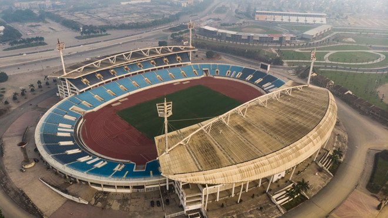

Thể Thao
Với vai trò thủ đô, Hà Nội là nơi tập trung nhiều câu lạc bộ thể thao lớn cùng các công trình thể thao quan trọng của Việt Nam. Hiện nay thành phố có một câu lạc bộ bóng đá nam: Hà Nội FC thi đấu tại V.League 1 và hai câu lạc bộ bóng đá nữ: Câu lạc bộ bóng đá nữ Hà Nội I và Câu lạc bộ bóng đá nữ Hà Nội II. Ngoài ra, trong quá khứ, Hà Nội từng có nhiều đội bóng mạnh như Thể Công, Công an Hà Nội, Tổng cục Đường sắt, Tổng cục Bưu điện (thành lập năm 1957), Phòng không Không quân, Thanh niên Hà Nội, Quân khu Thủ đô, Công nhân Xây dựng Hà Nội. Những vận động viên của Hà Nội luôn đóng vai trò quan trọng trong đoàn thể thao Việt Nam tham dự các kỳ thi đấu quốc tế. Từ năm 2001 đến 2003, các vận động viên của thành phố đã đạt được tổng cộng 3.414 huy chương, gồm: 54 huy chương thế giới, 95 huy chương châu Á, 647 huy chương Đông Nam Á và quốc tế, cùng 2.591 huy chương tại các giải đấu quốc gia.
Hà Nội dẫn đầu Việt Nam về tỷ lệ người thường xuyên tập luyện thể thao với 28,5%. Nhưng dân số quá đông, không gian đô thị ngày càng chật chội khiến những địa điểm thể thao trở nên khan hiếm và không đáp ứng đủ nhu cầu của người dân. Hầu hết các trường đại học và cao đẳng tại Hà Nội đều trong tình trạng thiếu sân chơi. Một vài trường có diện tích rộng, nhưng lại sử dụng một phần để xây dựng sân quần vợt với hiệu suất sử dụng không cao. Các sinh viên của thành phố thường phải chơi bóng trong những khoảng sân có diện tích nhỏ hẹp.
Các địa điểm văn hóa, giải trí
Theo con số giữa năm 2008, toàn thành phố Hà Nội có 17 rạp hát, trong đó 12 rạp thuộc hai quận Hoàn Kiếm và Hai Bà Trưng. Nhà hát Lớn của thành phố, nằm tại số 1 phố Tràng Tiền, quận Hoàn kiếm do người Pháp xây dựng và hoàn thành vào năm 1911. Ngày nay, đây là nơi biểu diễn các loại hình nghệ thuật cổ điển như opera, nhạc thính phòng, kịch nói, cũng là trung tâm của các hội nghị, gặp gỡ. Nằm tại số 91 phố Trần Hưng Đạo, Cung Văn hóa Hữu nghị Hà Nội cũng là một địa điểm biểu diễn quan trọng, nơi diễn ra các hoạt động văn hóa, nghệ thuật, thời trang, các cuộc thi hoa hậu... Cùng các hoạt động khoa học, hội thảo, hội nghị, triển lãm.
Dành cho sân khấu kịch, thành phố có Nhà hát Tuổi trẻ tại số quận Hai Bà Trưng với 650 chỗ ngồi, Nhà hát Chuông Vàng tại quận Hoàn kiếm với 250 ghế ngồi, Nhà hát Kịch Việt Nam nằm trên con đường nhỏ sau lưng Nhà hát Lớn với 170 ghế. Các môn nghệ thuật truyền thống của Việt Nam cũng có sân khấu riêng. Nhà hát Hồng Hà tại Đường Thành dành cho sân khấu tuồng. Nhà hát Cải lương Trung ương nằm tại quận Hai Bà Trưng. Môn nghệ thuật chèo cũng có riêng Nhà hát Chèo Việt Nam ở khu Văn công Mai Dịch, huyện Từ Liêm, và từ năm 2007 thêm một điểm biểu diễn ở Kim Mã, Giang Văn Minh. Rạp múa rối nước Thăng Long ở phố Đinh Tiên Hoàng, bờ hồ Hoàn Kiếm, thường được nhiều khách du lịch tìm đến.
Hà Nội là thành phố có hệ thống bảo tàng đa dạng bậc nhất Việt Nam. Một phần lớn trong số đó là các bảo tàng lịch sử, như Bảo tàng Lịch sử Quân sự, Bảo tàng Lịch sử Việt Nam, Bảo tàng Chiến thắng B52, Bảo tàng Cách mạng... Các lĩnh vực khác có thể kể tới Bảo tàng Mỹ thuật Việt Nam, Bảo tàng Dân tộc học Việt Nam, Bảo tàng Phụ nữ Việt Nam.
Làng nghề truyền thống
Thành phố Hà Nội trước kia đã có những làng nghề phong phú, thể hiện qua câu thành ngữ quen thuộc "Hà Nội 36 phố phường". Theo thời gian, bộ mặt đô thị của khu phố cổ đã có nhiều thay đổi, nhưng những con phố nơi đây vẫn giữ nguyên những cái tên thuở trước và không ít trong số đó vẫn là nơi buôn bán, kinh doanh những mặt hàng truyền thống cũ. Sau khi Hà Tây được sáp nhập vào Hà Nội, Hà Nội còn có thêm nhiều làng nghề danh tiếng khác. Theo số liệu cuối năm 2008, toàn Hà Nội có 1.264 làng nghề, là nơi tập trung làng nghề đông đúc bậc nhất Việt Nam
Lễ hội truyền thống
Thăng Long – Hà Nội là một trong ba vùng tập trung nhiều hội lễ của miền Bắc Việt Nam, cùng với vùng đất tổ Phú Thọ và xứ Kinh Bắc. Cũng như các vùng đất khác, những lễ hội truyền thống ở khu vực Hà Nội được tổ chức nhiều nhất vào mùa xuân. Phần nhiều các lễ hội tưởng nhớ những nhân vật lịch sử, truyền thuyết như Thánh Gióng, Hai Bà Trưng, Quang Trung, An Dương Vương... Một vài lễ hội có tổ chức những trò chơi dân gian độc đáo như hội thổi cơm thi làng Thị Cấm, hội bơi cạn và bắt chạch làng Hồ, hội chạy cờ làng Đơ Thao, lễ hội thả diều truyền thống Bá Giang.